１日目
- 10時10分 新千歳空港発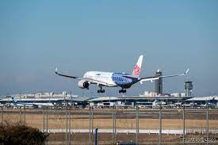
- １２時 成田空港着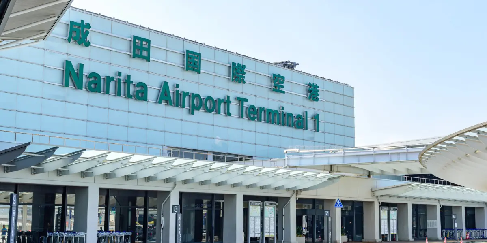
- 野方で輝道家ラーメン（14時頃予定）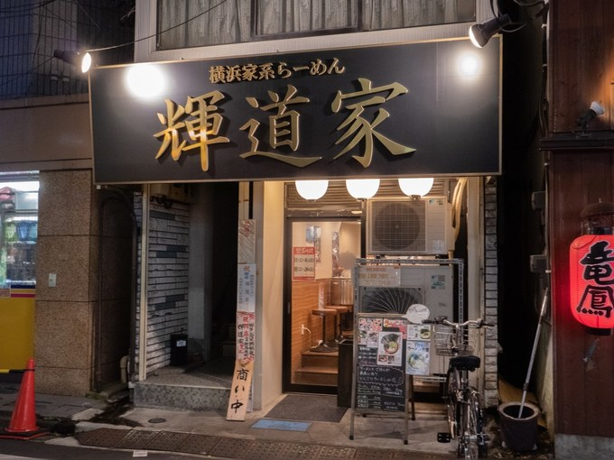
- 新宿へ移動（電車で15分）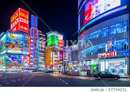
- 新宿観光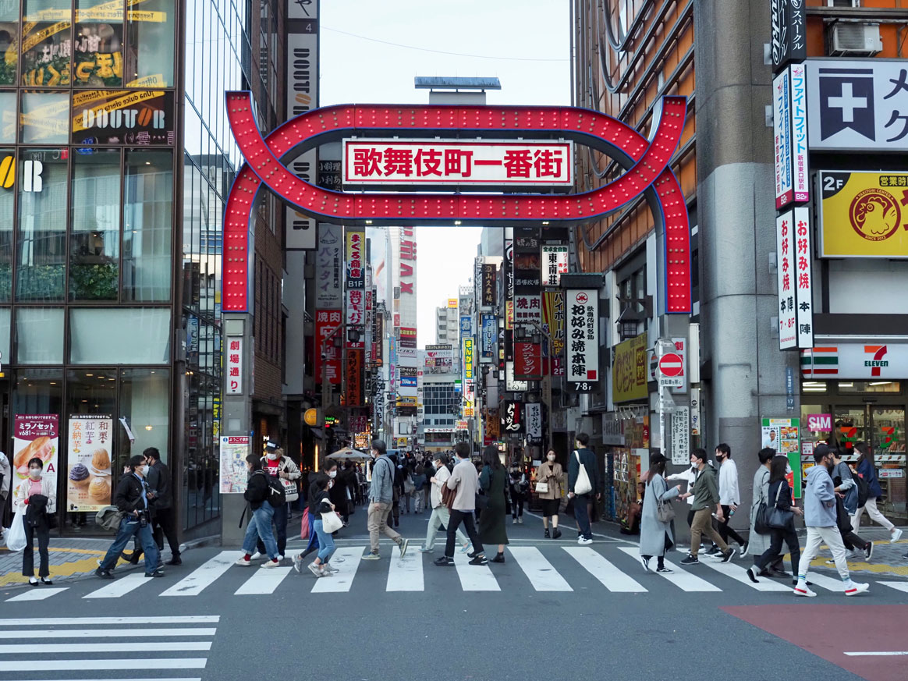
- 19:30 飲み会
- 宿泊：グランカスタマ 新宿
２日目
- 渋谷へお出かけ！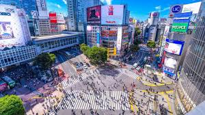
- 渋谷 観光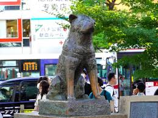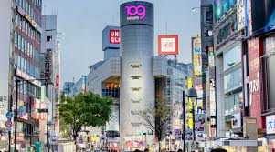
- 原宿までお散歩
- 原宿・表参道 観光 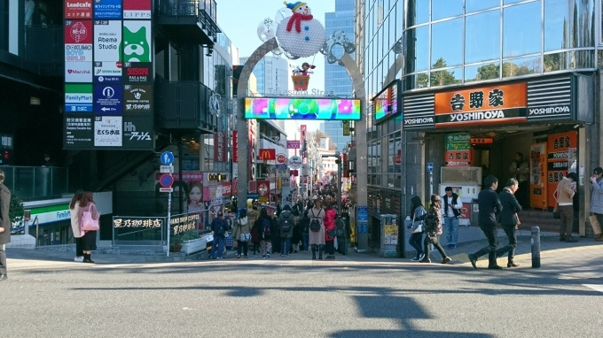 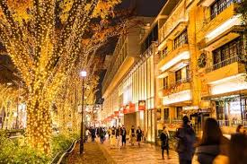
- 浅草へ移動 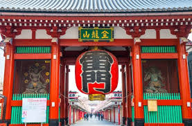
- 夜、スカイツリーに登る

- ホテル宿泊：イースト 21 東京

３日目
- 7時 初送迎バス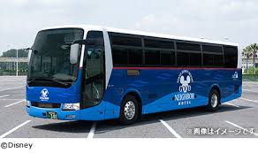
- ✨ディズニー✨
-
 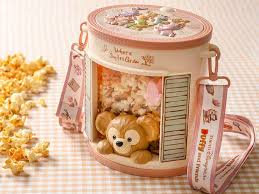
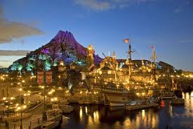
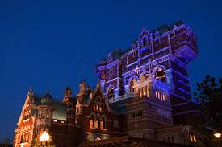
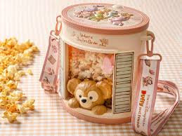
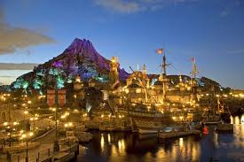
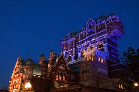
- 帰り送迎バス
- ホテル宿泊：イースト 21 東京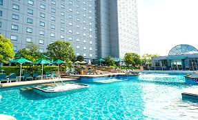
４日目
- 横浜中華街

- 横浜観光


- LIVE観覧


- お台場へ移動


- お台場で晩御飯
- ホテル宿泊：グラントリオス

５日目
- 11:30 LA BETTOLA da Ochiaiでランチ

- 銀座観光


- 16時 銀座発 成田空港行バス

- 17:55成田空港発